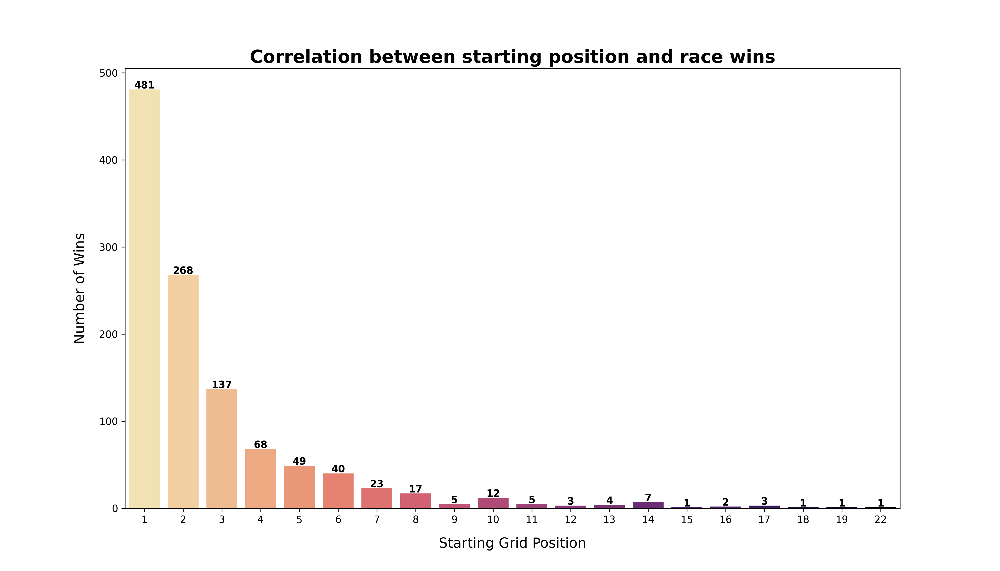

Note: If using Google Drive, make sure to enable external access to your video!
Introduction
This portfolio explores the 74-year history of Formula 1,
analyzing how the sport has evolved from a niche European championship into a global spectacle.
Through six visualizations, we examine the geographical expansion of the circuits,
the dynastic battles between the sport's greatest constructors, and the career trajectories of its legendary drivers.
The project demonstrates "how" they won - whether through dominance of the grid or longevity in age.
1). Formula one Circuits
Context & Question
This visualization shows all Formula 1 tracks that have ever existed throughout the history of the championship (1950-2024).
Most importantly, it shows the historical transition from a predominantly Eurocentric series to a truly global spectacle.
This is important because this expansion reflects the commercial and political strategy of the sport,
which has entered new markets in the Middle East, Asia, and America over the past 74 years.
Design Decisions
The Mercator projection was chosen because it is the easiest to interpret
the main purpose of this visualization,
which is to show the distribution of tracks around the world.
The size of the circles depends on the number of races held,
which allows you to instantly distinguish historic tracks from temporary racetracks.
Key Insights
The map shows a dense cluster of large dark bubbles in Europe (e.g., Monza, Silverstone, Spa).
This confirms that, despite recent global expansion, the historical core and most of the races held
remain deeply rooted in Europe.
2). Formula one European Circuits
Context & Question
While the previous map shows global distribution,
this one fails to capture the density of the sport's heartland,
Europe - the "spiritual home" of Formula 1.
This visualization zooms in to resolve the "overplotting" issue of the global
view and examine the specific geography of the sport's heartland.
Design Decisions
I used a Focused Geospatial Map centered specifically on coordinates [15, 53] (Central Europe)
with a high zoom scale to remove empty parts of the map. This allows us to clearly see the dense cluster of
circuits that would otherwise overlap on a world map.
Key Insights
The visualization confirms that F1’s historical center of
gravity lies in Western Europe. We observe a strong correlation
between geography and longevity: UK, Germany, Italy, Belgium, Netherlands and Monaco
hosts the largest bubbles, representing circuits with 50+ races
3). The Eras of Dominance
Context & Question
Formula 1 is defined by dynasties. How has the balance of power shifted
between the sport's greatest constructors over time?
This visualization tracks the annual win percentages of the top 7
most successful teams from 1950 to 2024, revealing distinct eras of dominance.
Design Decisions
I used a Normalized Stacked Area Chart (Streamgraph).
By normalizing the Y-axis to 100%.
This allows for a fair comparison of dominance.
I applied the authentic team livery colors
to make the eras instantly recognizable to fans.
Interactivity: To address the visual complexity of overlapping layers,
I implemented a "Click-to-Highlight" feature.
Clicking on a team in the legend fades out the competitors,
allowing the user to isolate specific dynasties and trace their rise and fall without distraction.
Key Insights
The chart reveals distinct eras of dominance. The very beginning of championship in 1950
was dominated by Ferrari (red). Later, in mid 70s we can see emerging McLaren (orange)
and Renault (yellow) as a new compatitrors.Also, since around the beginning of 2010,
we have seen Mercedes dominate after their return to F1 and their rivalry with Red Bull.
During Mercedes era, other teams have experienced stagnation.
4). History of Dominance: The Greatest Drivers
Context & Question
While all teams have always tried to create the most technologically advanced car,
the dilemma of the best driver has always remained relevant.
After all, no matter how good a car engineers create, without a good driver it is nothing.
So, who is the greatest of all time (GOAT) in the history of this fabulous championship?
Design Decisions
I used a Multi-Series Line Chart to show the accumulation of wins over time.
I also used authentic driver colors to make the lines look familiar to peaple who follow F1.
Unlike a bar chart, the slope of the line reveals the rate of dominance.
A steeper line (like Schumacher in 2004 or Verstappen currently) indicates a period of crushing superiority,
while a flatter line shows a competitive battle.
Key Insights
1. The Schumacher Slope: You can clearly see the exponential rise of Michael Schumacher (Red) between 2000 and 2004. The line goes nearly vertical, visualizing one of the most oppressive periods of dominance in sports history.
2. Hamilton's Longevity: Lewis Hamilton's curve extends longer and higher than anyone else's. His rise is relentless, overtaking Schumacher's previous record of 91 wins (once thought untouchable) and pushing the barrier beyond 100.
3. The New Era: Max Verstappen's (Pink) line is currently the steepest, indicating a new era of dominance. If he maintains this trajectory, he could challenge Hamilton's record within the next few years.
5). The Age of Victory
Context & Question
When do Formula 1 drivers reach their peak? While the previous chart focused on the constructors,
this visualization analyzes the human element. It addresses whether youth and reaction speed are more valuable than experience.
This is important for understanding the changing demographics of the sport.
Design Decisions
I chose a histogram with column sizes of 1 year to preserve detailed information about the age distribution.
I visualized the columns in gold and overlaid a red dotted line representing the average age.
This allows viewers to immediately see that, although “young” winners attract media attention,
the statistical average age is actually much higher, which reinforces the distribution around experience rather than pure youth.
Key Insights
The graph shows a clear distribution, with a sharp increase in victories starting at age 23 and peaking
in the mid-30s. The red average line confirms that the “prime” of an F1 driver's career occurs at just under
30 years of age. Interestingly, the long tail on the right shows that victories after
the age of 35 become statistically rare.
6). The Qualifying Advantage
Context & Question
In Formula 1, there is a famous cliché: "The race is won on Saturday."
This refers to the Qualifying session which determines the starting order.
How strong is the correlation between starting position and winning?
This visualization investigates whether starting on "Pole Position" (1st) is a guarantee of victory.
Design Decisions
I used a Vertical Bar Chart with a X-axis representing starting positions on the grid and a
Y-axis representing the number of wins. I chose the Magma (reversed) color palette, which highlights high positions with light
colors and transitions to darker shades for lower values. This visual hierarchy immediately draws attention to the significant
difference between 1st place and the rest of the participants.

Key Insights
1. The Pole Dominance: The data reveals an overwhelming correlation. The first bar (Pole Position) is drastically taller than any other, confirming that starting 1st gives a massive statistical advantage.
2. Decline: There is a sharp exponential decay in win probability. By the time you reach Grid Position 3 or 4, the chances of winning plummet. Victories from outside the Top 10 are extreme statistical outliers.
Reflection
From just vizs costructing to storytelling
Working on this portfolio changed my approach to visualization: I moved from simply displaying data to telling stories.
I learned not to just display all available data, but to filter it for meaning
Design and work with colors
I faced the challenge of combining different tools (interactive Altair and static Matplotlib) into a single style.
I had to manually create “semantic color scales” by linking specific hex codes to drivers and teams
(e.g., red for Schumacher/Ferrari) to make the visualization intuitive for the viewer.
This taught me the importance of creating a unified design system before starting to write code.
============================================
BEFORE SUBMITTING:
✓ All [placeholders] replaced with your content
✓ Minimum 5 visualizations included
✓ Video link working and embedded
✓ Introduction explains unified theme (3-5 sentences)
✓ Each viz has: Context, Design, Insights, Source
✓ ZIP named: Portfolio_[LastName]_[FirstName].zip
✓ All datasets and AI documentation included in ZIP
📋 Complete checklist in ASSIGNMENT.md
DELETE THIS COMMENT BLOCK BEFORE SUBMITTING!
============================================